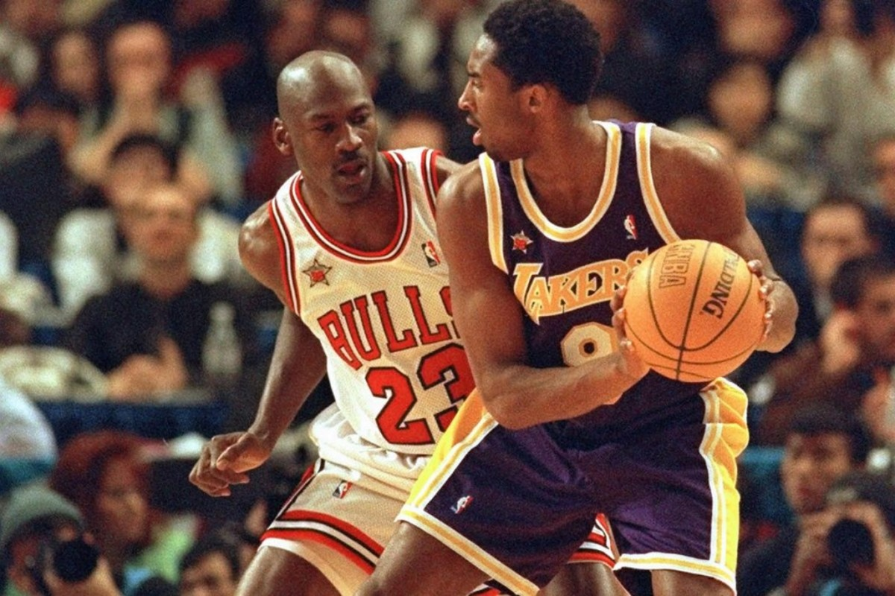

Hi! I'm excited to share my passions for basketball and salsa dancing with you.
I always try to keep a good Body-Mind Connection.
Basketball and Salsa help me maintain
that healthy relationship between the two
and maintain a good sense of well-being to my weekly routine.
Basketball has always been my favorite sport. I love the thrill of the game, the teamwork, and the energy it brings. Basketball has profoundly shaped my life since I picked it up in 4th grade. It taught me discipline, teamwork, and resilience, helping me grow both on and off the court. Every game and practice became a chance to challenge myself, build friendships, and develop a healthy, goal-oriented mindset that continues to benefit me to this day.
Salsa dancing became my unexpected favorite hobby in my late 20s, adding an exciting and joyful dimension to my life. What started as a casual attempt to try something new quickly turned into a passion. The rhythm, energy, and sense of connection on the dance floor captivated me, offering a fun escape from routine while keeping me active. Beyond the physical benefits, salsa introduced me to a vibrant community and a newfound confidence, making it an irreplaceable part of my life.